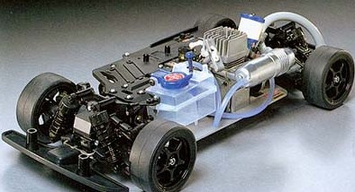

タミヤ TG10-Mk.1

引用元画像：タミヤ公式サイト
📋 基本情報
| メーカー | タミヤ（Tamiya） |
|---|---|
| 機種名 | TG10-Mk.1 |
| 型番 | 44014（シャーシキット）など |
| 発売時期 | 1998年10月15日 |
| 生産状況 | 生産終了 |
| カテゴリー | ラジコンカー（1/10スケール エンジンRCカー） |
| サブカテゴリー | グローエンジンカー（オンロード・ツーリング） |
📏 シャーシスペック
| 全長 | 450mm |
|---|---|
| 全幅 | 185mm |
| シャーシ重量 | 1550g |
| ホイールベース | 257mm |
| トレッド | 前後共156mm |
| タイヤ幅/径 | 27/65mm |
| フレーム | 2.5mm厚ジュラルミン製ロワ＋強化ナイロン樹脂製アッパーのダブルデッキ |
⚙️ 駆動系
| 駆動方式 | シャフトドライブ4WD |
|---|---|
| デフギヤ | 前後とも4ベベル |
| ギヤ比 | 8.1:1 |
| トランスミッション | 2スピード |
| ベアリング | 4個装備（効率的なパワー伝達） |
| エンジン | タミヤ FS-12LT（2.1cc） |
| 燃料タンク | 75cc |
🔧 サスペンション
| 形式 | 4輪ダブルウィッシュボーン独立懸架 |
|---|---|
| ダンパー | 高性能オイルダンパー |
| ブレーキ | 大型ディスクブレーキ |
💡 特徴
タミヤ初の本格的グローエンジンカー
- 1998年発売のタミヤ初の1/10スケール本格エンジンツーリングカー
- シャフトドライブ4WDシステムを採用した高性能シャーシ
- 2.5mm厚ジュラルミン製ロワデッキと強化ナイロン樹脂製アッパーデッキの頑丈なダブルデッキフレーム
高い操縦性能
- 4輪ダブルウィッシュボーン独立懸架により優れた路面追従性を実現
- 高性能オイルダンパーが滑らかな動きを生み出す
- 大型ディスクブレーキで確実な制動力
扱いやすいFS-12LTエンジン
- 2.1ccのタミヤFS-12LTエンジンを搭載
- リコイルスターター付きで始動が簡単
- ウェットタイプエアクリーナー、ギヤカバー、アンダーカウルを装備
充実の装備
- 2スピードトランスミッション標準装備
- 4個のボールベアリングで効率的なパワー伝達
- 豊富なオプションパーツで更なる性能向上が可能
🔧 ぽすとそに工房での修理実績
修理難易度
★★★★★（非常に難しい、かなり古いエンジンカーのため、パーツ供給がないに等しいです）
よくある故障・注意点
- 生産終了から25年以上経過しており、パーツ入手が困難
- エンジン関連部品（FS-12LT）の劣化や摩耗
- ジュラルミンフレームの経年劣化やネジ穴の摩耗
- ゴム部品（燃料チューブ、Oリングなど）の硬化
- 2スピードトランスミッションの調整不良
修理のポイント
- エンジンのメンテナンスが重要（定期的な清掃とオイル交換）
- 燃料系統のゴム部品は定期的な交換が必要
- ベアリングの状態確認と必要に応じた交換
- 2スピードトランスミッションの調整には経験が必要
- 代替パーツの検討が必要な場合もある
その他の特徴
- タミヤのエンジンカー文化を築いた記念すべきモデル
- TG10-Mk.1 PROなどのバリエーションも存在
- ビンテージRCとしての価値が高い
- 修理には専門的な知識とエンジンカーの経験が推奨される